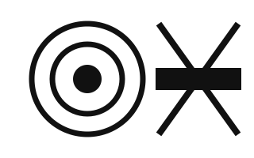

Sardor Nodirov
engineer · building Aristotle
the glyph is the pixel
About
I build software. I care about systems with strict internal laws, interfaces that explain themselves, and products that respect the person on the other side of the screen.
Most of my attention goes to Aristotle. Before it I spent years shipping on the web — building, breaking, and rebuilding until the ideas held.
Work
- Aristotle — what I am building now.
- This site — a character grid pretending to be a page. Every mark, including these words, is the state of a cell.
nothing here moves · the cells only change

Writing
Notes on the things I keep returning to: interface physics, small systems, and the craft of making software feel inevitable.
first pieces in progress
Elsewhere
- mail — sardor@heyaristotle.com
Colophon
This page never scrolls. The viewport is a fixed grid of character cells; a longer document passes through it the way tape passes a read head. The background is not an image — it is the same substrate the text is made of, and it is always moving.
Set in IBM Plex Mono, drawn on one canvas, written underneath as one plain HTML document — select it, search it, read it without JavaScript. No frameworks, no tracking, no images.
end · begin again